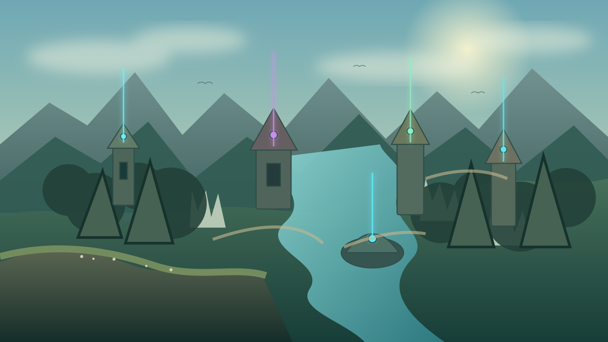

WORLD INFO
ランドマークを選択
世界に置かれた施設は、現行NotionOSに実在する役割だけで構成しています。
[WORLD] 現在地をロードしました
[SENSOR] 外界観測レーダー 4系統が稼働中
[RULE] 原典と派生情報を分離
[SENSOR] 外界観測レーダー 4系統が稼働中
[RULE] 原典と派生情報を分離

世界に置かれた施設は、現行NotionOSに実在する役割だけで構成しています。